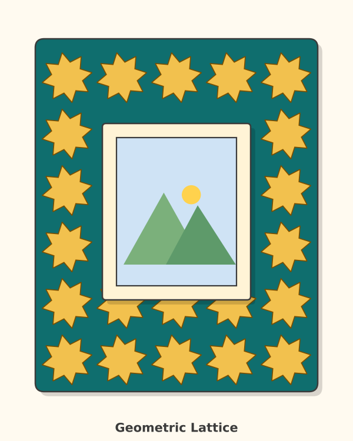
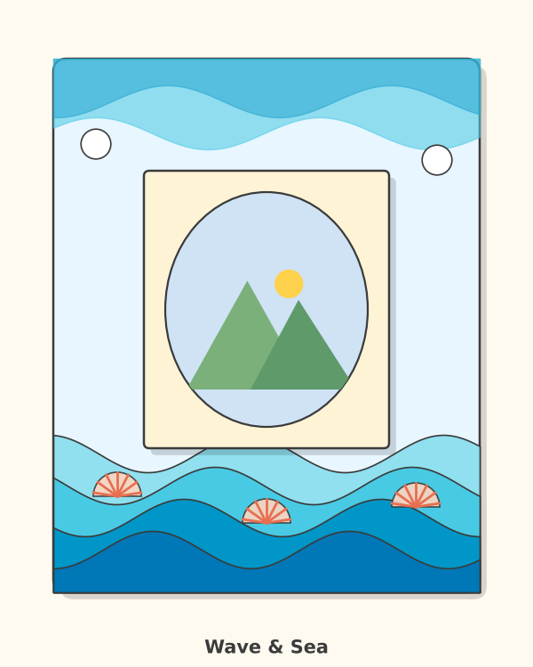
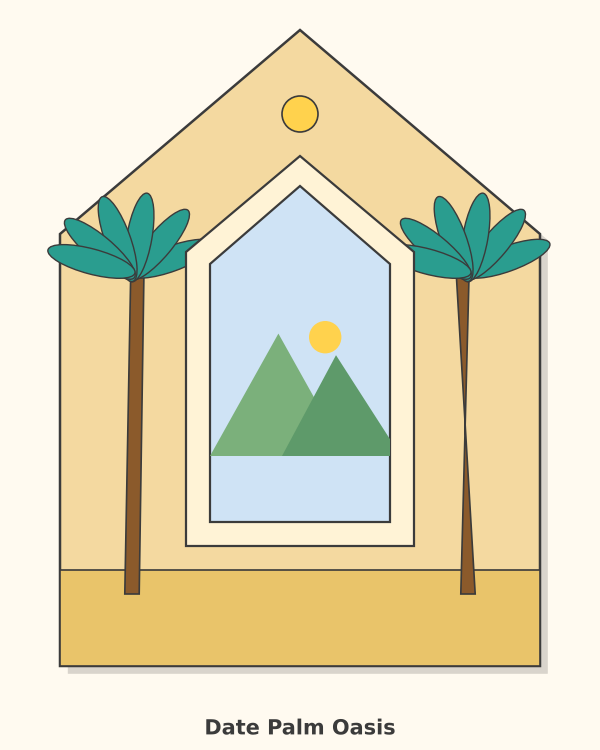
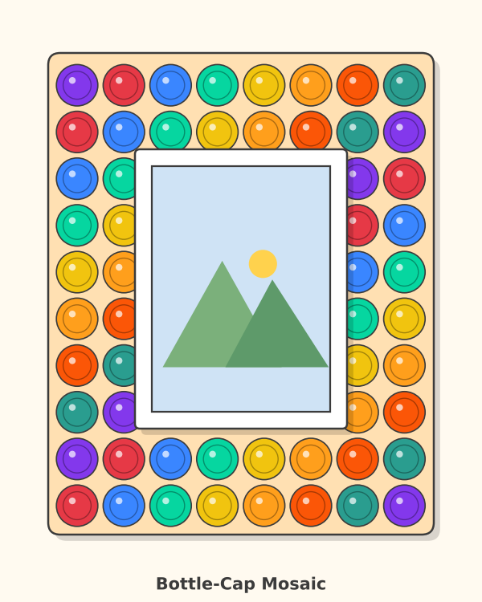
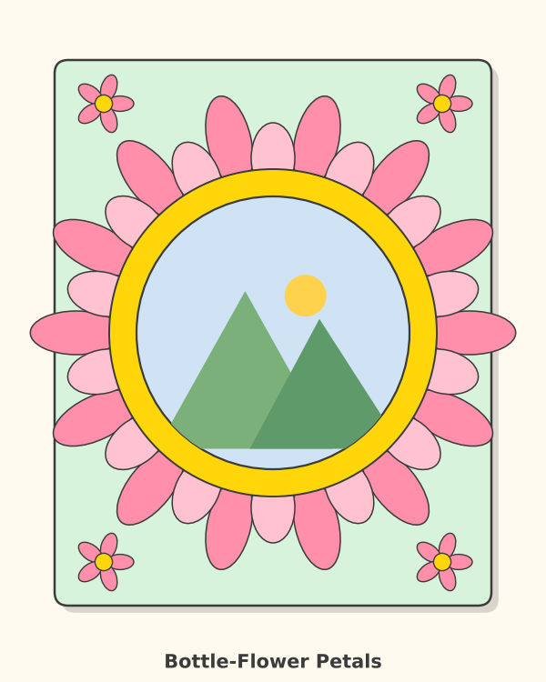
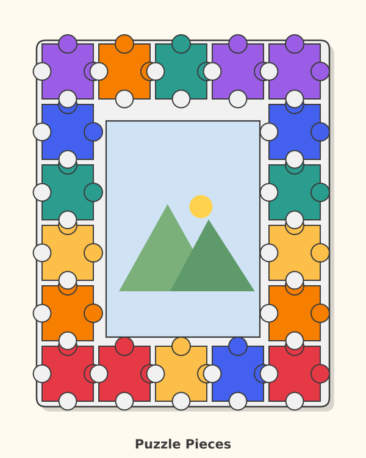
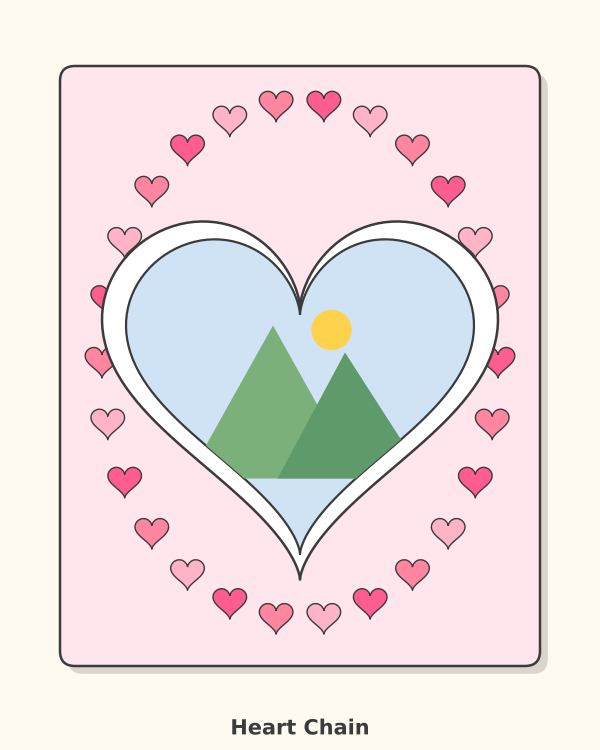
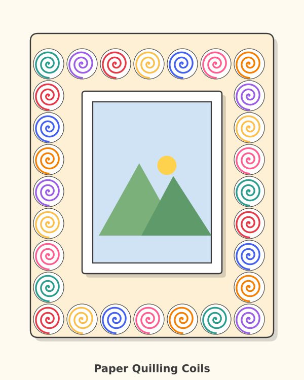
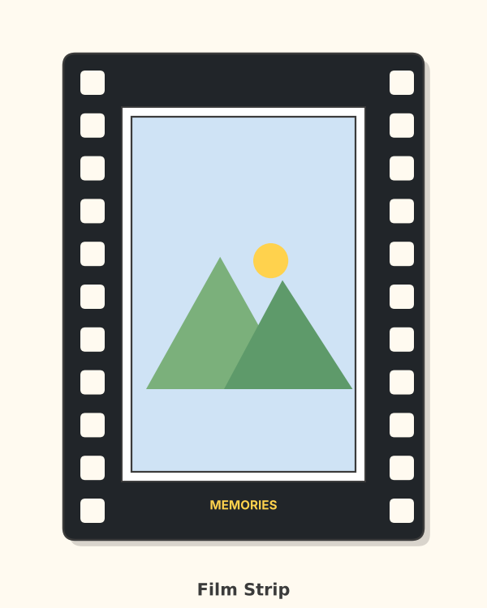
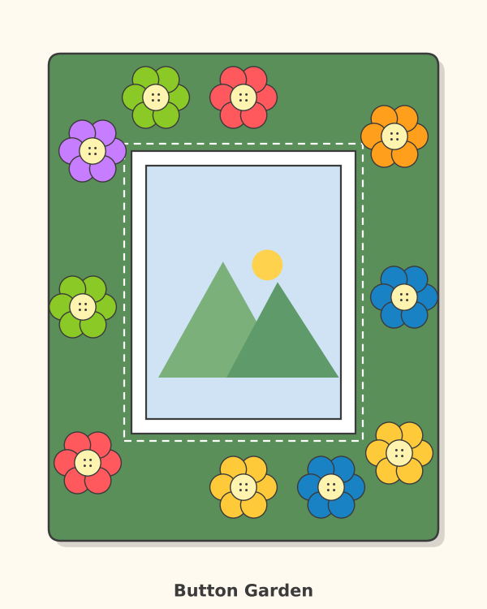

16 decorative frame ideas
Each sketch shows the front of the frame. Use them to spark your own design ideas in Criterion B.

1. Sunburst Rays
Theme: Sun, energy, happiness
A round photo window with triangular rays coming out like the sun.
Materials: cardboard strips, lollipop / ice-cream sticks, bottle-cap centre ring, 3 mm MDF or foam board base, acrylic paint, PVA glue.
Key features: Round window, Two ray lengths, Warm yellow and orange colours.
Tip: Cut rays from card in two lengths and layer them.
Difficulty: ★★☆ · 3D model

2. Geometric Lattice
Theme: UAE geometric art, mashrabiya patterns
A square frame covered with repeating eight-point stars like Arabic geometric screens.
Materials: thin cardboard (cereal box), old gift wrap, gold or yellow paper scraps, foam board or 3 mm MDF, metallic or acrylic paint, stencil card.
Key features: Eight-point star template, Repeating pattern, Dark background, bright stars.
Tip: Make one star template, trace it, repeat the pattern.
Difficulty: ★★★ · 3D model

3. Wave & Sea
Theme: The Arabian Gulf, dhows, shells
Layered blue waves along the bottom and a curved window with real or paper shells.
Materials: cardboard layers, blue paper and magazine pages, seashells or shell-shaped pasta (dried), foam board backing, PVA glue, blue acrylic paint.
Key features: Layered waves, Oval window, Shell decorations.
Tip: Cut wave strips in 4 sizes and glue them in layers for depth.
Difficulty: ★★☆ · 3D model

4. Date Palm Oasis
Theme: Heritage and the desert
An arched window with date palms growing up the sides and a sandy base.
Materials: brown paper bag (trunks), green card or magazine pages (leaves), date stones, cleaned and dried, MDF or foam board with arch cut, acrylic paint, PVA glue.
Key features: Arch window, Palm trees, Sand-coloured base.
Tip: Cut leaves as long ovals and fan them from the trunk top.
Difficulty: ★★☆ · 3D model

5. Bottle-Cap Mosaic
Theme: Recycling and colour
A bright border made entirely from plastic bottle caps glued side by side.
Materials: plastic bottle caps, jar lids (small), wrapping paper, foam board or 3 mm MDF base, hot glue (adult only), PVA glue.
Key features: Colour pattern, Rectangle window, Caps glued edge to edge.
Tip: Sort caps by colour first and plan the pattern on paper.
Difficulty: ★★☆ · 3D model

6. Honeycomb
Theme: Teamwork and nature
A hexagon window with a border of hexagon cells in warm golds.
Materials: egg-carton pieces, cardboard hexagons, yellow and orange paper scraps, foam board base, paint, hexagon template.
Key features: Hexagon window, Repeated hexagon cells, Warm gold palette.
Tip: Make one hexagon template, trace it and cut many identical cells.
Difficulty: ★★★ · 3D model

7. Bottle-Flower Petals
Theme: Gardens and gifts
A circle window surrounded by two rings of petals cut from plastic bottles or card.
Materials: clean plastic bottles (petals), cupcake cases, cardboard circle, foam board base, scissors (adult help for bottles), hot glue (adult only).
Key features: Round window, Two rings of petals, Flower corners.
Tip: Draw one petal template and cut 14 petals for each ring.
Difficulty: ★★★ · 3D model

8. Dubai Skyline Layers
Theme: Our city and landmarks
Skyline silhouettes in three layers above a wide photo window, like a sunset over Dubai.
Materials: cereal-box card (3 colours), old magazines, paper towel tube pieces (spacers for depth), foam board base, acrylic paint (sunset sky), PVA glue.
Key features: Three layers, Landmark shapes, Landscape window.
Tip: Cut three skylines and glue them with small spacers so they stand out.
Difficulty: ★★★ · 3D model

9. Puzzle Pieces
Theme: Family fits together
A border of big colourful jigsaw pieces, one for each family member.
Materials: cardboard pieces, old jigsaw puzzle pieces, coloured paper, foam board or 3 mm MDF, paint and marker pens, PVA glue.
Key features: Jigsaw edge pieces, Rainbow colours, Rectangle window.
Tip: Make one jigsaw template with two knobs and two sockets.
Difficulty: ★★★ · 3D model

10. Falcon Wings
Theme: UAE national bird, freedom
An oval window with feather-shaped wings spreading out and a small head and beak.
Materials: card in brown shades, paper feathers cut from bags, bamboo skewer stand (adult cuts), foam board, acrylic paint, PVA glue.
Key features: Oval window, Feathers in graded lengths, Bird head.
Tip: Cut 8 feathers in graded lengths and fan them out.
Difficulty: ★★★ · 3D model

11. Dhow Boat
Theme: Trading heritage of the UAE
A boat-shaped frame with a triangular sail as the photo window.
Materials: cardboard, string or jute (rigging), fabric scraps (sail), MDF or foam board, paint, PVA glue.
Key features: Sail-shaped window, Hull base, Waves.
Tip: Draw the hull and sail on squared paper first.
Difficulty: ★★☆ · 3D model

12. Heart Chain
Theme: Love and care for family
A heart-shaped window surrounded by a ring of small hearts cut from old magazines.
Materials: old magazines and gift wrap, red and pink paper scraps, buttons, foam board, scissors, PVA glue.
Key features: Heart window, Ring of small hearts, Pink and red palette.
Tip: Fold paper in half and cut half a heart to make a perfect pair.
Difficulty: ★★☆ · 3D model

13. Paper Quilling Coils
Theme: Slow, careful craft
A border made from tightly rolled paper coils in many colours.
Materials: magazine strips, newspaper strips, coloured paper strips, foam board or card base, PVA glue, tooth-pick or skewer rolling tool.
Key features: Rolled coils, Many colours, Window with a plain mat.
Tip: Roll strips round a skewer and glue the ends.
Difficulty: ★★★ · 3D model

14. Film Strip
Theme: Photography and memories
A black frame with sprocket holes like a roll of film.
Materials: black card or painted cereal box, white paper scraps (holes), old photo negatives or acetate, foam board or 3 mm MDF, paint, hole punch.
Key features: Black strip, Evenly spaced holes, Title text.
Tip: Mark the holes with a template so they are evenly spaced.
Difficulty: ★☆☆ · 3D model

15. Rainbow Arch
Theme: Hope and happiness
An arched frame with six rainbow bands and clouds at the bottom.
Materials: coloured paper, cotton wool or paper clouds, painted card, foam board or 3 mm MDF with arch cut, acrylic paint, compass.
Key features: Arch window, Six colour bands, Cloud base.
Tip: Use a compass to draw six arches with the same centre.
Difficulty: ★★☆ · 3D model

16. Button Garden
Theme: Memories and keepsakes
A fabric-like green frame with flowers made from old buttons around a stitched border.
Materials: old buttons, fabric scraps, green card or felt, foam board, PVA glue, marker pens for stitching lines.
Key features: Button flowers, Stitched border line, Green background.
Tip: Group buttons by colour to make each flower.
Difficulty: ★☆☆ · 3D model